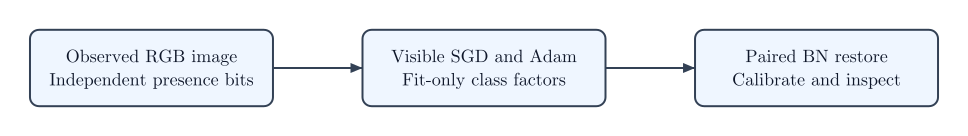
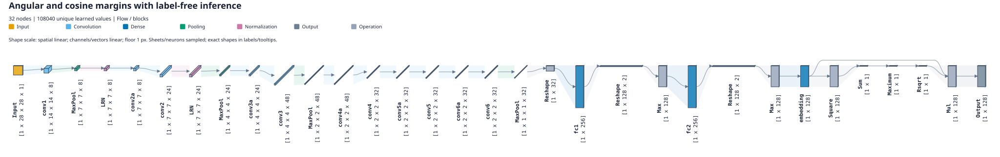
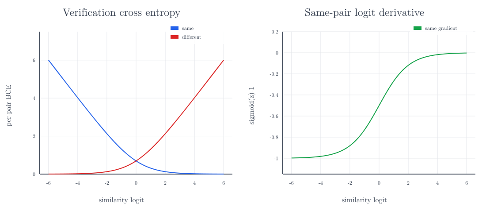
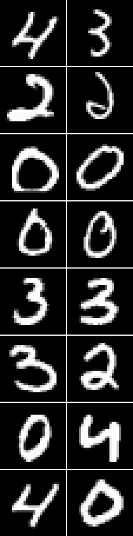
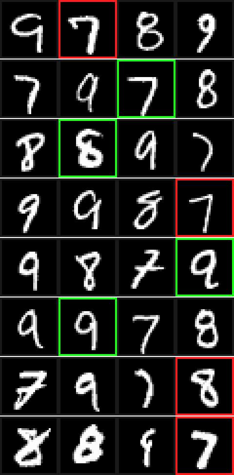
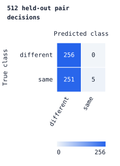

Siamese verification and unseen-class one-shot tasks
Abstract
Shared convolutional features turn two images into a symmetric learned similarity score. Hand derivatives and full-width checks precede visible tensor Adam fitting on MNIST digits0–4,checkpoint selection on5–6,and actual one-shot previews on unseen7–9.
Source example: examples/cpp/source/nn/1_convolutional_neural_networks/1.8_other_vision_tasks/siamese.cpp.
The method
Learn a weighted absolute difference between two shared sigmoid embeddings with binary cross entropy. Use the highest query/support score to classify one-shot tasks without fine-tuning;keep class-disjoint selection,optimizer loops and baseline comparisons visible.
The concept diagram below is drawn by dm::graphics::Diagram. Its editable C++
source is the complete block below; regeneration uses the same datamunge toolchain
as the numerical examples. Exports consume the saved local SVG.
#include <dm/dm.hpp>
int main() {
std::filesystem::create_directories("build");
dm::graphics::Diagram diagram;
diagram.node("n0", {0.0, 0}, "Pair two images\nShare one encoder");
diagram.node("n1", {5.2, 0}, "Learn same or different\nVisible Adam steps");
diagram.node("n2", {10.4, 0}, "Compare new classes\nOne support per class");
diagram.edge("n0", "n1").edge("n1", "n2");
diagram.save_svg("build/siamese_concept.svg");
}
Executed tensor architecture
Two grayscale inputs are packed in separate channels for this shape probe; both branches share the same encoder parameters.
This figure executes the inference configuration shown in the code, using a zero-valued shape probe without fitting or loading a checkpoint. Named stage boundaries group whole subgraphs where available; other nodes retain functional-layer detail. Exact batch-inclusive shapes and reachable parameter totals come from the trace. Shared linear scales map spatial dimensions and channel counts to blocks; the one-pixel visibility floor is disclosed in the legend. Labels use compact monospace text, rotate counterclockwise and sit beside their own glyphs. Arrows flow left to right; wide diagrams scroll at native size on the website.
#include <dm/dm.hpp>
int main() {
namespace n = dm::nn;
namespace m = n::models;
n::set_num_threads(2);
std::filesystem::create_directories("build");
n::ParameterStore p(17), state(18);
const auto c = m::SiameseConfig::Compact();
n::Module architecture_model(
[&](const n::Tensor& image) {
const auto a = m::SiameseEncoder(p, n::slice_axis(image, 3, 0, 1), c).embedding;
const auto b = m::SiameseEncoder(p, n::slice_axis(image, 3, 1, 2), c).embedding;
return m::SiameseLogit(p, a, b, c.embedding);
},
"Siamese verification and unseen-class one-shot tasks");
n::ModelPlotOptions options;
options.style = n::ModelPlotStyle::Flow;
options.detail = n::ModelPlotDetail::Blocks;
options.labels = {.type = n::ModelPlotLabel::NameAndShape, .size = 12, .wrap = 24};
options.spacing = {.layer = 24, .lane = 12, .label = 8, .margin = 20};
options.sizing.spatial_size = 96;
options.sizing.channel_size = 42;
options.sizing.minimum_extent = 1;
options.opacity = .8;
const auto diagram = architecture_model.plot(n::zeros({1, 48, 48, 2}), options);
diagram.save_svg("build/siamese_architecture.svg");
std::print(
"{} displayed nodes; {} reachable learned values.\n",
diagram.nodes().size(),
diagram.parameter_count());
}29 displayed nodes; 24337 reachable learned values.

Shared features, symmetric score
The two branches call the same encoder with the same parameter store. If \(h_a=f_\theta(a)\) and \(h_b=f_\theta(b)\),the learned similarity logit is
Swapping inputs preserves every absolute difference. Identical embeddings produce the bias,regardless of their values. The weights are unconstrained, so this score need not define a mathematical distance metric. For target y,the stable binary cross entropy has derivative \(\partial\ell/\partial z=\sigma(z)-y\). Our zero-logit derivative is exactly .5-y;equal embedding coordinates use the zero subgradient of absolute value. The native independent hand oracle verifies all input,weight and bias derivatives,including logits +/-1000 and zero.
#include <dm/dm.hpp>
int main() {
namespace n = dm::nn;
n::ParameterStore p(0);
const auto a = n::tensor({.1, .8, -.2, .4, -.5, .7}, {2, 3}),
b = n::tensor({-.4, .2, .9, .4, .6, -.3}, {2, 3});
n::models::SiameseLogit(p, a, b, 3);
p.set("similarity/W", n::tensor({-.7, .4, 1.2}, {3, 1}));
p.set("similarity/b", n::tensor({-.2}));
const auto z = n::models::SiameseLogit(p, a, b, 3);
if (n::sum(n::abs(z - n::models::SiameseLogit(p, b, a, 3))).item() != 0)
return 1;
auto logits = n::linspace(-6, 6, 121).requires_grad_();
const auto same = n::models::SiameseBinaryCrossEntropy(logits, n::ones_like(logits));
const auto different = n::models::SiameseBinaryCrossEntropy(logits, n::zeros_like(logits));
const auto derivative = n::grad(n::sum(same), {logits})[0];
auto loss = dm::graphics::RPlot::create(), grad = dm::graphics::RPlot::create();
const auto x = logits.to_vector<double>();
loss.lines(x, same.to_vector<double>(), "same", {37, 99, 235})
.lines(x, different.to_vector<double>(), "different", {220, 38, 38})
.title("Verification cross entropy")
.x_label("similarity logit")
.y_label("per-pair BCE")
.y_limits(0, 7.5);
grad.lines(x, derivative.to_vector<double>(), "same gradient", {22, 163, 74})
.title("Same-pair logit derivative")
.x_label("similarity logit")
.y_label("sigmoid(z)-1")
.y_limits(-1.15, .2);
std::filesystem::create_directories("build");
auto layout = dm::graphics::RLayout::create(1, 2);
layout.add(loss).add(grad).size(1100, 480).fit_panels().save_svg(
"build/siamese_objective.svg");
std::print("Controlled logits {:.6f},{:.6f};swap difference exactly0;identical score=-.2. "
"Stable BCE and every hand derivative checked in native fixtures. No fitting.\n",
z.to_vector<float>()[0], z.to_vector<float>()[1]);
}Controlled logits 1.010000,1.440000;swap difference exactly0;identical score=-.2. Stable BCE and every hand derivative checked in native fixtures. No fitting.

Full and compact encoders really share parameters
The full105-pixel model uses VALID10/7/4/4 convolutions with64/128/128/256 channels,max pooling after the first three,and a4096-dimensional sigmoid embedding. Including the similarity head,it has38,951,745 learned scalars in 12 tensors. The compact48-pixel encoder keeps all four convolutions and three pools,using kernels5/3/3/2,channels8/16/16/32 and64 embedding coordinates: 24,337 learned scalars in the same12 tensor roles. Pre-pool sides are44/20/8/3. The full graph below executes a forward/backward pass;it is not just a census. The compact native fixture also verifies that encoder gradients equal the sum of the two separately stopped-branch contributions.
#include <dm/dm.hpp>
int main() {
namespace n = dm::nn;
n::set_num_threads(2);
for (bool compact : {false, true}) {
const auto c = compact ? n::models::SiameseConfig::Compact() : n::models::SiameseConfig{};
n::ParameterStore p(17);
const auto x = n::arange(0, c.side * c.side * 2).reshape({2, c.side, c.side, 1});
const auto a = n::models::SiameseEncoder(p, .5 + .45 * n::sin(x * .173), c),
b = n::models::SiameseEncoder(p, .5 + .45 * n::cos(x * .097), c);
const auto z = n::models::SiameseLogit(p, a.embedding, b.embedding, c.embedding);
const auto gradients = n::grad(n::sum(z), p.parameters());
if (p.count() != (compact ? 24337 : 38951745) || gradients.size() != 12)
return 1;
for (const auto &g : gradients)
if (!g.defined() || !std::isfinite(n::sum(n::square(g.to(n::DType::Float64))).item()))
return 1;
std::print(
"{}:{} learned scalars,12 shared leaves and finite gradients;embedding[2,{}].\n",
compact ? "Compact48" : "Full105", p.count(), c.embedding);
}
}Full105:38951745 learned scalars,12 shared leaves and finite gradients;embedding[2,4096]. Compact48:24337 learned scalars,12 shared leaves and finite gradients;embedding[2,64].
Actual pairs and disjoint classes
We use the official60,000/10,000 MNIST train/test IDX splits from the existing local cache. Fitting uses only digits0–4 from the training split;validation uses digits5–6 from that split;testing uses only digits7–9 from the official test split. Each selected class contributes its first512 rows. Host RNG selects row/class metadata;pixel gathering and all image arithmetic use tensors.
Balanced pair sampling creates exactly half same-class and half different-class pairs,then shuffles them. Same-class rows are distinct. One-shot tasks have one support per class and a different query image of one support class. No query fine-tuning or test-time optimizer updates occur. The displayed images are the actual sampled rows,not generated digit illustrations.
#include <dm/dm.hpp>
int main() {
namespace n = dm::nn;
std::filesystem::path cache;
if (const auto *p = std::getenv("DATAMUNGE_DATA_DIR"))
cache = p;
else if (const auto *p = std::getenv("XDG_CACHE_HOME"))
cache = std::filesystem::path(p) / "datamunge/datasets";
else
cache = std::filesystem::path(std::getenv("HOME")) / ".cache/datamunge/datasets";
dm::datasets::fetch("mnist", (cache / "mnist").string());
const auto data = n::load_mnist((cache / "mnist").string(), "train");
const auto buckets = n::models::SiameseBuckets(data, {0, 1, 2, 3, 4});
const auto pairs = n::models::SiamesePairs(buckets, 16, 11);
std::vector<std::size_t> rows;
int positives = 0;
std::print("| row | left digit | right digit | same target |\n|---:|---:|---:|---:|\n");
const auto labels = n::models::MetricDatasetLabels(data);
for (int i = 0; i < 8; ++i) {
rows.push_back(pairs[i].left);
rows.push_back(pairs[i].right);
std::print("| {} | {} | {} | {} |\n", i, labels[pairs[i].left], labels[pairs[i].right],
int(pairs[i].same));
}
for (const auto &p : pairs)
positives += int(p.same);
if (positives != 8)
return 1;
std::filesystem::create_directories("build");
n::save_image_grid(n::models::SiameseImages(data, rows), "build/siamese_pairs.png", 2, 0, 1,
2, 1, 4);
std::print("\n16 sampled pairs: exactly 8 same and 8 different; first 8 shown as left and "
"right. Source "
"rows and labels stay aligned.\n");
}| row | left digit | right digit | same target |
|---|---|---|---|
| 0 | 4 | 3 | 0 |
| 1 | 2 | 2 | 1 |
| 2 | 0 | 0 | 1 |
| 3 | 0 | 0 | 1 |
| 4 | 3 | 3 | 1 |
| 5 | 3 | 2 | 0 |
| 6 | 0 | 4 | 0 |
| 7 | 4 | 0 | 0 |
16 sampled pairs: exactly 8 same and 8 different; first 8 shown as left and right. Source rows and labels stay aligned.

Visible Adam and one-shot checkpoint selection
The complete compact model fits96 explicit Adam(.001) updates:three epochs
of1024 newly sampled balanced pairs,batch32. Every shared leaf is created
before the optimizer. The objective is mean BCE plus.00005*sum(kernel²);
this is the equivalent half-coefficient form of an L2 strength.0001.
Bilinear28→48 resizing retains the source coordinate convention.
Checkpoint selection maximizes128 fixed2-way validation tasks,breaking ties with256 fixed validation pair BCE. Restoration must reproduce both before 512 fixed test pairs and256 fixed3-way tasks are scored. The pixel baseline uses negative squared byte-pixel distance with no learning. An untrained network uses the same held-out tasks;its scores are measured before fitting.
#include <dm/dm.hpp>
int main() {
namespace n = dm::nn;
namespace m = n::models;
n::set_num_threads(2);
std::filesystem::path cache;
if (const auto *p = std::getenv("DATAMUNGE_DATA_DIR"))
cache = p;
else if (const auto *p = std::getenv("XDG_CACHE_HOME"))
cache = std::filesystem::path(p) / "datamunge/datasets";
else
cache = std::filesystem::path(std::getenv("HOME")) / ".cache/datamunge/datasets";
dm::datasets::fetch("mnist", (cache / "mnist").string());
const auto train = n::load_mnist((cache / "mnist").string(), "train"),
test = n::load_mnist((cache / "mnist").string(), "test");
if (train.images.shape()[0] != 60000 || test.images.shape()[0] != 10000)
return 1;
const auto fitting = m::SiameseBuckets(train, {0, 1, 2, 3, 4}),
validation = m::SiameseBuckets(train, {5, 6}),
testing = m::SiameseBuckets(test, {7, 8, 9});
const auto validation_pairs = m::SiamesePairs(validation, 256, 41),
test_pairs = m::SiamesePairs(testing, 512, 43),
probe = m::SiamesePairs(fitting, 256, 47);
const auto validation_tasks = m::SiameseTasks(validation, 128, 53),
test_tasks = m::SiameseTasks(testing, 256, 59);
n::ParameterStore p(17);
const auto c = m::SiameseConfig::Compact();
const auto forward = [&](const n::Tensor &left, const n::Tensor &right) {
const auto a = m::SiameseEncoder(p, n::resize_bilinear(left, {48, 48}), c),
b = m::SiameseEncoder(p, n::resize_bilinear(right, {48, 48}), c);
return m::SiameseLogit(p, a.embedding, b.embedding, c.embedding);
};
// Warm all twelve leaves before constructing Adam;there is no BN or other state.
{
n::NoGradGuard guard;
forward(n::zeros({1, 28, 28, 1}), n::zeros({1, 28, 28, 1}));
}
const auto score_pairs = [&](const n::ImageDataset &data,
const std::vector<m::VerificationPair> &pairs) {
n::NoGradGuard guard;
std::vector<n::Tensor> logits;
for (std::size_t start = 0; start < pairs.size(); start += 64) {
const auto end = std::min(pairs.size(), start + 64);
const auto b = m::MakeSiameseBatch(data, {pairs.begin() + start, pairs.begin() + end});
logits.push_back(forward(b.left, b.right));
}
return n::concat(logits, 0);
};
const auto pair_metrics = [&](const n::ImageDataset &data,
const std::vector<m::VerificationPair> &pairs) {
return m::SiameseVerificationMetrics(score_pairs(data, pairs),
m::MakeSiameseBatch(data, pairs).labels);
};
const auto episode_scores = [&](const n::ImageDataset &data,
const std::vector<m::OneShotTask> &tasks) {
std::vector<m::VerificationPair> pairs;
for (const auto &task : tasks)
for (const auto row : task.support)
pairs.push_back({task.query, row, 0});
return score_pairs(data, pairs)
.reshape({std::int64_t(tasks.size()), std::int64_t(tasks.front().support.size())});
};
const auto targets = [](const std::vector<m::OneShotTask> &tasks) {
std::vector<std::int64_t> ids;
for (const auto &task : tasks)
ids.push_back(task.correct);
return n::from_vector(ids);
};
const auto val_targets = targets(validation_tasks), test_targets = targets(test_tasks);
const double
initial = pair_metrics(train, probe).to_vector<double>()[0],
untrained =
m::SiameseOneShotAccuracy(episode_scores(test, test_tasks), test_targets).item(),
pixel = m::SiameseOneShotAccuracy(m::SiamesePixelScores(test, test_tasks), test_targets)
.item();
std::vector<n::Tensor> kernels;
for (const auto &leaf : p.parameters())
if (leaf.dim() > 1)
kernels.push_back(leaf);
n::OptimizerConfig config;
config.kind = n::OptimizerKind::Adam;
n::Optimizer adam(p, .001, config);
std::filesystem::create_directories("build");
std::filesystem::create_directories("figures");
std::vector<double> epochs, losses, val_loss, val_accuracy;
double best = -1, best_loss = INFINITY;
int selected = 0, steps = 0;
std::print(
"| epoch | fitting BCE | validation BCE | validation2-way |\n|---:|---:|---:|---:|\n");
for (int epoch = 1; epoch <= 3; ++epoch) {
const auto pairs = m::SiamesePairs(fitting, 1024, 100 + epoch);
double total = 0;
for (std::size_t start = 0; start < pairs.size(); start += 32) {
const auto batch =
m::MakeSiameseBatch(train, {pairs.begin() + start, pairs.begin() + start + 32});
const auto logits = forward(batch.left, batch.right);
const auto bce = n::mean(m::SiameseBinaryCrossEntropy(logits, batch.labels));
auto penalty = n::zeros({});
for (const auto &w : kernels)
penalty = penalty + n::sum(n::square(w));
if (!std::isfinite(bce.item()))
return 1;
total += bce.item();
adam.minimize(bce + .00005 * penalty);
++steps;
}
const double loss = pair_metrics(train, validation_pairs).to_vector<double>()[0],
accuracy = m::SiameseOneShotAccuracy(episode_scores(train, validation_tasks),
val_targets)
.item();
epochs.push_back(epoch);
losses.push_back(total / 32);
val_loss.push_back(loss);
val_accuracy.push_back(accuracy);
if (accuracy > best || (accuracy == best && loss < best_loss)) {
best = accuracy;
best_loss = loss;
selected = epoch;
p.save("build/siamese_best.npz");
}
std::print("| {} | {:.6f} | {:.6f} | {:.6f} |\n", epoch, losses.back(), loss, accuracy);
}
p.load("build/siamese_best.npz");
if (std::abs(pair_metrics(train, validation_pairs).to_vector<double>()[0] - best_loss) >
1e-7 ||
m::SiameseOneShotAccuracy(episode_scores(train, validation_tasks), val_targets).item() !=
best)
return 1;
const auto metrics = pair_metrics(test, test_pairs).to_vector<double>();
const auto scores = episode_scores(test, test_tasks);
const auto accuracy = m::SiameseOneShotAccuracy(scores, test_targets).item();
const auto verification_truth=m::MakeSiameseBatch(test,test_pairs).labels, verification_prediction=n::greater_equal(score_pairs(test,test_pairs),0).to(n::DType::Int64);
n::ConfusionMatrix verification_counts(2);verification_counts.add(verification_truth.to(n::DType::Int64),verification_prediction);
verification_counts.save_svg("build/siamese_verification.svg",{.title="512 held-out pair decisions",.labels={"different","same"}});
n::save_npz("build/siamese_verification.npz",{{"truth",verification_truth},{"prediction",verification_prediction},{"counts",verification_counts.to_tensor()}});
const auto final = pair_metrics(train, probe).to_vector<double>()[0];
n::save_image_grid(m::SiameseEpisodeGallery(test, test_tasks, scores),
"build/siamese_episodes.png", 1, 0, 1, 2, 1, 2);
std::filesystem::copy_file("build/siamese_episodes.png", "figures/siamese_episodes.png",
std::filesystem::copy_options::overwrite_existing);
std::print(
"{} explicit Adam updates;selected epoch{};restored validation2-way {:.6f}/BCE "
"{:.6f};fixed fitting BCE {:.6f}->{:.6f}.\n512 balanced unseen-class test pairs:BCE "
"{:.6f},accuracy {:.6f},TP/FP/FN/TN {:.0f}/{:.0f}/{:.0f}/{:.0f};same/different "
"probabilities {:.6f}/{:.6f}.\n256 unseen-class3-way tasks:trained {:.6f},untrained "
"{:.6f},byte-pixel nearest {:.6f},chance1/3.\n",
steps, selected, best, best_loss, initial, final, metrics[0], metrics[1], metrics[4],
metrics[5], metrics[6], metrics[7], metrics[2], metrics[3], accuracy, untrained, pixel);
std::print(
"| episode | correct support column | selected support column |\n|---:|---:|---:|\n");
const auto choices = n::argmax(scores, 1).to_vector<std::int64_t>();
for (int i = 0; i < 8; ++i)
std::print("| {} | {} | {} |\n", i, test_tasks[i].correct, choices[i]);
auto a = dm::graphics::RPlot::create(), b = dm::graphics::RPlot::create();
a.lines(epochs, losses, "fitting BCE", {37, 99, 235})
.lines(epochs, val_loss, "validation BCE", {220, 38, 38})
.title("Fitting and unseen-class BCE")
.x_label("epoch")
.y_label("mean pair BCE")
.y_limits(0, 1.05);
b.lines(epochs, val_accuracy, "validation2way", {22, 163, 74})
.title("Validation one-shot selection")
.x_label("epoch")
.y_label("fraction correct;2-way tasks")
.y_limits(0, 1.2);
auto layout = dm::graphics::RLayout::create(1, 2);
layout.add(a).add(b).size(1100, 480).fit_panels().save_svg("build/siamese_training.svg");
}| epoch | fitting BCE | validation BCE | validation2-way |
|---|---|---|---|
| 1 | 0.647387 | 0.703524 | 0.671875 |
| 2 | 0.583940 | 0.709901 | 0.695312 |
| 3 | 0.510512 | 0.731408 | 0.601562 |
96 explicit Adam updates;selected epoch2;restored validation2-way 0.695312/BCE 0.709901;fixed fitting BCE 0.694596->0.566148. 512 balanced unseen-class test pairs:BCE 0.701269,accuracy 0.509766,TP/FP/FN/TN 5/0/251/256;same/different probabilities 0.395489/0.363343. 256 unseen-class3-way tasks:trained 0.496094,untrained 0.601562,byte-pixel nearest 0.550781,chance1/3.
| episode | correct support column | selected support column |
|---|---|---|
| 0 | 2 | 0 |
| 1 | 1 | 1 |
| 2 | 0 | 0 |
| 3 | 0 | 2 |
| 4 | 2 | 2 |
| 5 | 0 | 0 |
| 6 | 1 | 2 |
| 7 | 0 | 2 |


The short source protocol is deliberately reported even when it fails to improve generalization. Training-pair BCE reduction does not establish useful unseen-class verification or one-shot transfer. Compare trained,untrained and pixel baselines directly in the computed results;the three-way chance rate is1/3. These are class-disjoint MNIST teaching tasks,not the paper’s Omniglot 20-way benchmark. Score calibration at threshold zero and support ranking measure different behavior.

Regenerate adjacent views from this run
#include <dm/dm.hpp>
int main(){std::filesystem::copy_file("build/siamese_episodes.png","build/export_siamese_episodes.png",std::filesystem::copy_options::overwrite_existing);}#include <dm/dm.hpp>
int main(){std::filesystem::copy_file("build/siamese_verification.svg","build/export_siamese_verification.svg",std::filesystem::copy_options::overwrite_existing);}Conclusion
The encoder is shared structurally and its two gradient contributions add. Stable verification derivatives and actual held-out episodes make the computation inspectable. This bounded fit can improve fitting loss while transferring worse than its untrained or pixel baselines;the computed comparisons show that limitation directly.
References
- [Koch,Zemel and Salakhutdinov(2015),Siamese Neural Networks for One-shot Image Recognition](https://www.cs.cmu.edu/~rsalakhu/papers/oneshot1.pdf).